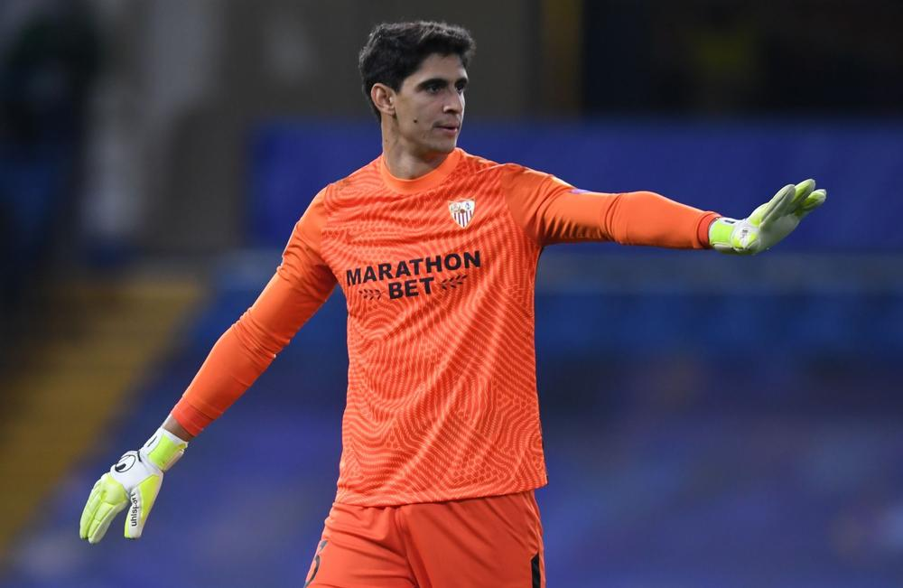

16/11- ELEMINATIONS COUPE DU MONDE 2022:
DERNIERE SEANCE D'ENTRAINEMENT ...
MAROC

Fédération : Fédération Royale Marocaine de Football
Prés. de la Fédération : Fouzi LEKJAA
Entraineur : Vahid HALILHODZIC
le Maroc est classé 29 ème au classement FIFA (à la date du 21 octobre 2021)
CALENDRIER
Novembre 2021
SOUDAN 0-3 MAROC
MAROC 16/11 GUINEE
Janvier 2022
MAROC 10/01 GHANA
ACTUALITÉ

16/11 -Maroc -Guinée , éliminators Coupe du monde 2022 : à quelle heure
et sur quelle chaine ?
COMPÉTITIONS
Coupe d'Afrique des Nations

Matchs AmicauxMatchs Amicaux

Eliminatoires CM - Afrique
Résultats Qualif. CM Afrique 2022 : 2e tour - groupe I
| Equipe | Pts | J | G | N | D | BP | BC |
|---|---|---|---|---|---|---|---|
| 1-Maroc | 18 | 6 | 6 | 0 | 0 | 20 | 1 |
| 2-Guinée-Bissau | 6 | 6 | 1 | 3 | 2 | 5 | 11 |
| 3-Guinée | 4 | 6 | 0 | 4 | 2 | 5 | 11 |
| 4-Soudan | 3 | 6 | 0 | 3 | 3 | 5 | 12 |
TROPHÉS
| Compétitions | Area | Total |
|---|---|---|
| Coupe D'Afrique des nations | Afrique | 1 |
| Championnat D'Afrique des nations | Afrique | 2 |
ACTUALITE

16/11 -Maroc -Guinée , éliminators Coupe du monde 2022 : à quelle heure et sur quelle chaine ?

15/11- Football. Attaqué sur sa tactique par un journaliste , Vahid Halilhodzic répond magistralement .

12/11- Le Maroc s’impose 3 à 0 face au Soudan

11/11-Vahid halilhodzic prépare déja la CAN avec les éliminations de la Coupe du Monde

09/11- Maroc : Hakim Ziyech répond à Vahid Halilhodzic

8/11- Séville, Maroc : la tuile pour Youssef En-Nesyri qui va manquer la CAN
Gardiens



Défenseurs
Milieux